|
Tinker-HP v1.3
|
|
Tinker-HP v1.3
|
Go to the source code of this file.
Functions/Subroutines | |
| subroutine | diagvec2 (nrhs, A, c, b, d) |
| Performs product of vector a with polarisabilities BUt now on two vectors at once ! More... | |
| subroutine | diagvec3 (nrhs, A1, a2, a3, b1, b2, b3) |
| subroutine | tmatxbrecipsave (mu, murec, nrhs, dipfield, dipfieldbis, fphivec) |
| Compute the reciprocal space contribution to the electric field due to the current value of the induced dipoles. Saves the potential and subsequent derivatives in a fphi(20,n) vector. More... | |
| subroutine | fftthatplz2 (vec, vecbis, fphivec) |
| subroutine | fftthatplz (vec, vecbis, fphivec) |
| subroutine | cart_to_frac_vec (a_in, a_out) |
| subroutine | fphi_uind_big (isite, impi, fdip_phi1, fdip_phi2) |
| subroutine | fphi_dervec_site2 (isite, impi, grid, fdervec) |
| subroutine | fphi_dervec_site (isite, impi, grid, fdervec) |
| subroutine | torque_prods (d, q2, rmat, dri, di, qi) |
| subroutine | torquetcg_dir (torq_mu, torq_t, denedmu, denedt) |
| subroutine | torquetcg_rec (torq_mu, torq_t, denedmu, denedt) |
| subroutine cart_to_frac_vec | ( | real*8, dimension(3), intent(in) | a_in, |
| real*8, dimension(3) | a_out | ||
| ) |
Definition at line 708 of file tcgstuff.f90.
References cart_to_frac().
Referenced by fftthatplz(), fftthatplz2(), scalderfieldzmatrec1(), scalderfieldzmatrec3(), scalderfieldzmatrec6(), and scalderfieldzmatrec8().
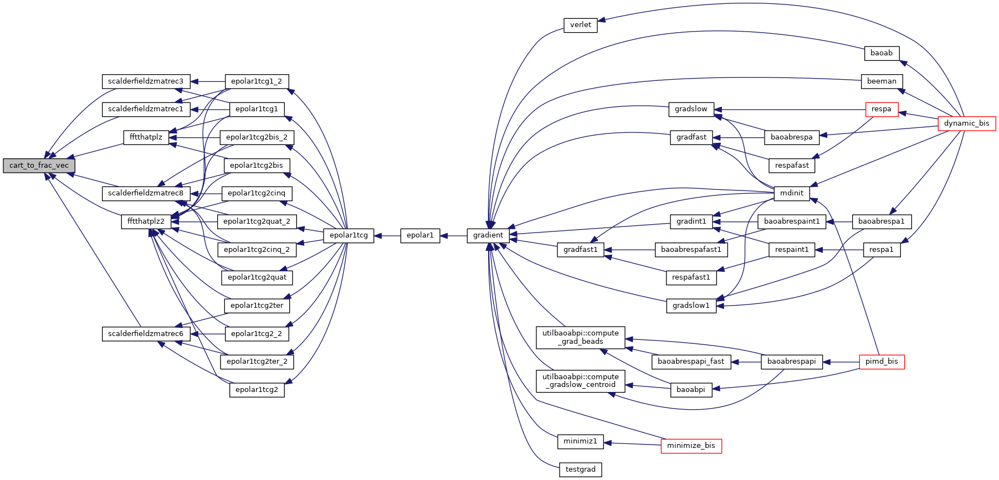
| subroutine diagvec2 | ( | integer, intent(in) | nrhs, |
| real*8, dimension(3,nrhs,npolebloc) | A, | ||
| real*8, dimension(3,nrhs,npolebloc) | c, | ||
| real*8, dimension(3,nrhs,npolebloc) | b, | ||
| real*8, dimension(3,nrhs,npolebloc) | d | ||
| ) |
Performs product of vector a with polarisabilities BUt now on two vectors at once !
| no | params |
Definition at line 13 of file tcgstuff.f90.
Referenced by epolar1tcg1(), epolar1tcg1_2(), epolar1tcg1shortreal(), epolar1tcg2bis(), epolar1tcg2bis_2(), and epolar1tcg2bisshortreal().
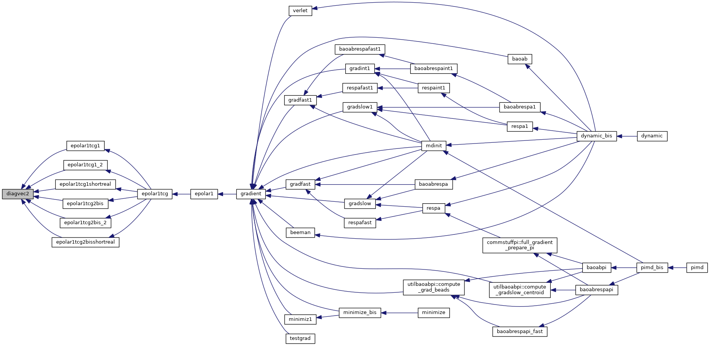
| subroutine diagvec3 | ( | integer, intent(in) | nrhs, |
| real*8, dimension(3,nrhs,npolebloc) | A1, | ||
| real*8, dimension(3,nrhs,npolebloc) | a2, | ||
| real*8, dimension(3,nrhs,npolebloc) | a3, | ||
| real*8, dimension(3,nrhs,npolebloc) | b1, | ||
| real*8, dimension(3,nrhs,npolebloc) | b2, | ||
| real*8, dimension(3,nrhs,npolebloc) | b3 | ||
| ) |
Definition at line 45 of file tcgstuff.f90.
Referenced by epolar1tcg2quat(), epolar1tcg2quat_2(), epolar1tcg2quatshortreal(), epolar1tcg2ter(), epolar1tcg2ter_2(), and epolar1tcg2tershortreal().
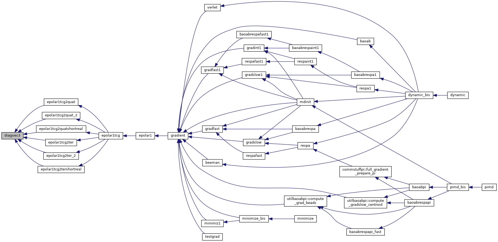
| subroutine fftthatplz | ( | real*8, dimension(3,npoleloc), intent(in) | vec, |
| real*8, dimension(3,npolerecloc), intent(in) | vecbis, | ||
| real*8, dimension(20, npolerecloc), intent(out) | fphivec | ||
| ) |
Definition at line 509 of file tcgstuff.f90.
References cart_to_frac_vec(), fft2d_backmpi(), fft2d_frontmpi(), fphi_dervec_site(), and grid_uind_site().
Referenced by epolar1tcg1(), epolar1tcg1_2(), epolar1tcg2bis(), and epolar1tcg2bis_2().
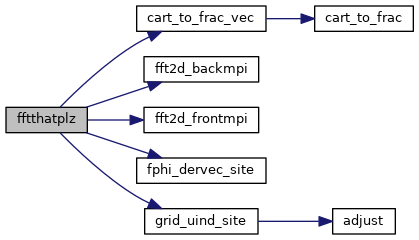
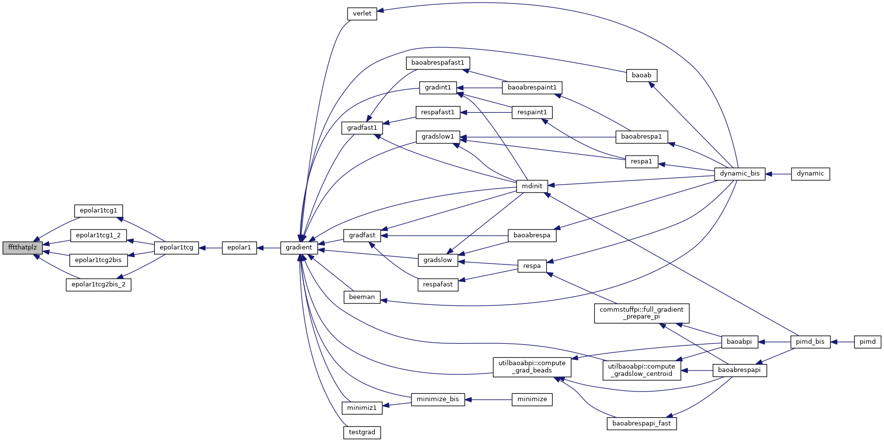
| subroutine fftthatplz2 | ( | real*8, dimension(3, 2,npoleloc), intent(in) | vec, |
| real*8, dimension(3, 2,npolerecloc), intent(in) | vecbis, | ||
| real*8, dimension(20,2, npolerecloc), intent(out) | fphivec | ||
| ) |
Definition at line 305 of file tcgstuff.f90.
References cart_to_frac_vec(), fft2d_backmpi(), fft2d_frontmpi(), fphi_dervec_site2(), and grid_uind_site().
Referenced by epolar1tcg1(), epolar1tcg1_2(), epolar1tcg2(), epolar1tcg2_2(), epolar1tcg2bis(), epolar1tcg2bis_2(), epolar1tcg2cinq(), epolar1tcg2cinq_2(), epolar1tcg2quat(), epolar1tcg2quat_2(), epolar1tcg2ter(), and epolar1tcg2ter_2().
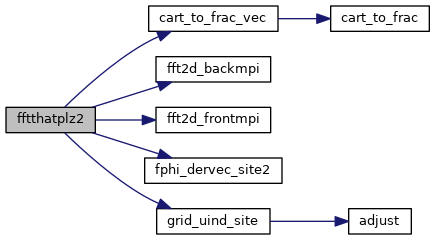
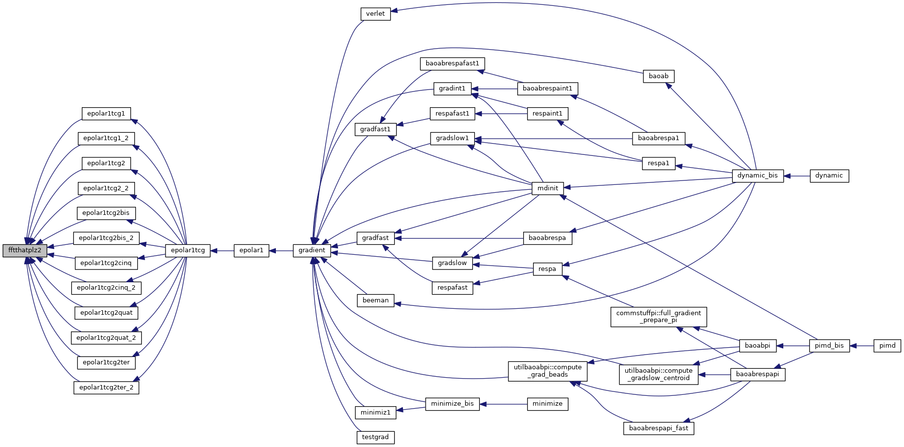
| subroutine fphi_dervec_site | ( | integer | isite, |
| integer | impi, | ||
| real*8, dimension(2,n1mpimax,n2mpimax,n3mpimax,nrec_send+1) | grid, | ||
| real*8, dimension(20) | fdervec | ||
| ) |
Definition at line 1327 of file tcgstuff.f90.
Referenced by fftthatplz().
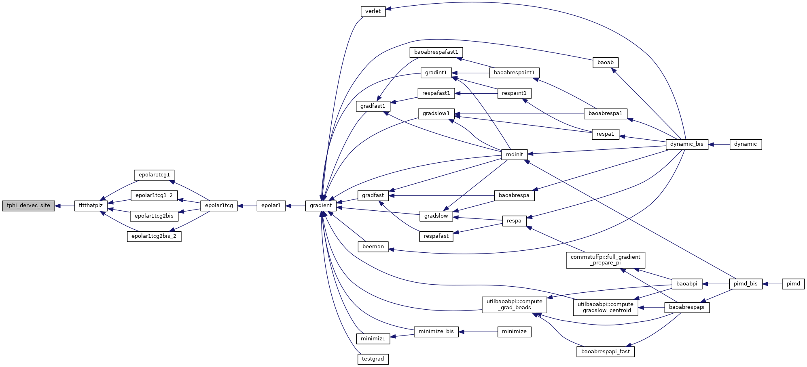
| subroutine fphi_dervec_site2 | ( | integer | isite, |
| integer | impi, | ||
| real*8, dimension(2,n1mpimax,n2mpimax,n3mpimax,nrec_send+1) | grid, | ||
| real*8, dimension(20,2) | fdervec | ||
| ) |
Definition at line 1036 of file tcgstuff.f90.
Referenced by fftthatplz2().
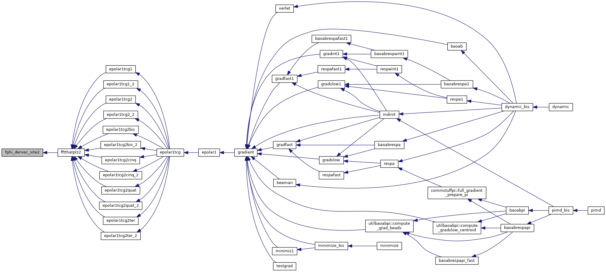
| subroutine fphi_uind_big | ( | integer | isite, |
| integer | impi, | ||
| real*8, dimension(20) | fdip_phi1, | ||
| real*8, dimension(20) | fdip_phi2 | ||
| ) |
Definition at line 738 of file tcgstuff.f90.
Referenced by tmatxbrecipsave().
| subroutine tmatxbrecipsave | ( | real*8, dimension(3,nrhs,*) | mu, |
| real*8, dimension(3,nrhs,*) | murec, | ||
| integer | nrhs, | ||
| real*8, dimension(3,nrhs,*) | dipfield, | ||
| real*8, dimension(3,nrhs,*) | dipfieldbis, | ||
| real*8, dimension(20, 2, max(1,npolerecloc)) | fphivec | ||
| ) |
Compute the reciprocal space contribution to the electric field due to the current value of the induced dipoles. Saves the potential and subsequent derivatives in a fphi(20,n) vector.
| no | params |
Definition at line 75 of file tcgstuff.f90.
References aadd(), fft2d_backmpi(), fft2d_frontmpi(), fphi_uind_big(), and grid_uind_site().
Referenced by epolar1tcg1(), epolar1tcg1_2(), epolar1tcg2(), epolar1tcg2_2(), epolar1tcg2bis(), epolar1tcg2bis_2(), epolar1tcg2cinq(), epolar1tcg2cinq_2(), epolar1tcg2quat(), epolar1tcg2quat_2(), epolar1tcg2ter(), and epolar1tcg2ter_2().
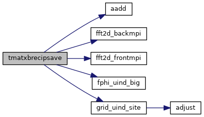
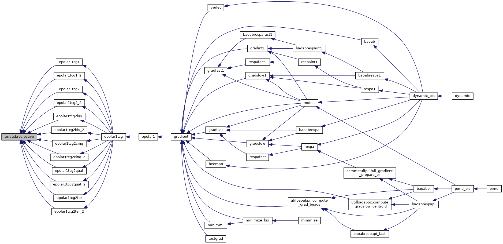
| subroutine torque_prods | ( | real*8, dimension(3) | d, |
| real*8, dimension(3,3) | q2, | ||
| real*8, dimension(3,3) | rmat, | ||
| real*8, dimension(3,3,3) | dri, | ||
| real*8, dimension(3,3) | di, | ||
| real*8, dimension(3,3,3) | qi | ||
| ) |
Definition at line 1536 of file tcgstuff.f90.
References aclear().
Referenced by torquetcg_dir(), and torquetcg_rec().
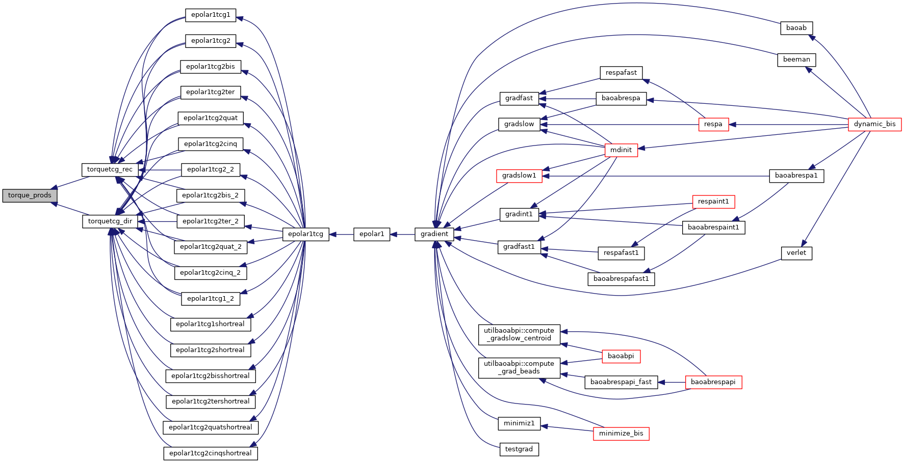
| subroutine torquetcg_dir | ( | real*8, dimension(3,nbloc) | torq_mu, |
| real*8, dimension(3,nbloc) | torq_t, | ||
| real*8, dimension(3,npolebloc) | denedmu, | ||
| real*8, dimension(3,3,npolebloc) | denedt | ||
| ) |
Definition at line 1570 of file tcgstuff.f90.
References derrot(), sprod(), and torque_prods().
Referenced by epolar1tcg1(), epolar1tcg1_2(), epolar1tcg1shortreal(), epolar1tcg2(), epolar1tcg2_2(), epolar1tcg2bis(), epolar1tcg2bis_2(), epolar1tcg2bisshortreal(), epolar1tcg2cinq(), epolar1tcg2cinq_2(), epolar1tcg2cinqshortreal(), epolar1tcg2quat(), epolar1tcg2quat_2(), epolar1tcg2quatshortreal(), epolar1tcg2shortreal(), epolar1tcg2ter(), epolar1tcg2ter_2(), and epolar1tcg2tershortreal().
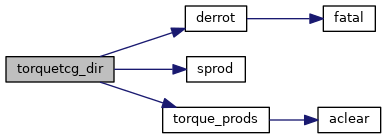
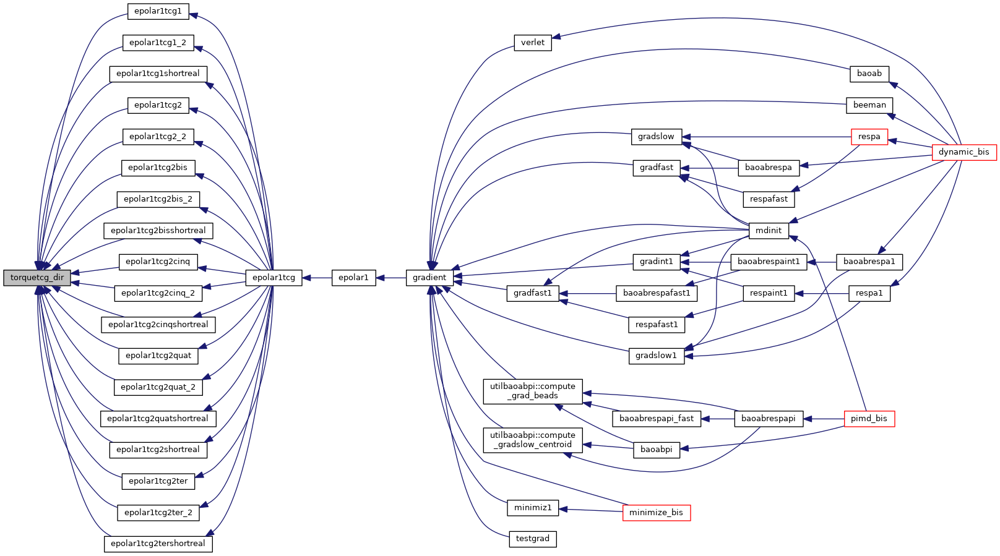
| subroutine torquetcg_rec | ( | real*8, dimension(3,nlocrec2) | torq_mu, |
| real*8, dimension(3,nlocrec2) | torq_t, | ||
| real*8, dimension(3,nlocrec) | denedmu, | ||
| real*8, dimension(3,3,nlocrec) | denedt | ||
| ) |
Definition at line 1698 of file tcgstuff.f90.
References derrot(), sprod(), and torque_prods().
Referenced by epolar1tcg1(), epolar1tcg1_2(), epolar1tcg2(), epolar1tcg2_2(), epolar1tcg2bis(), epolar1tcg2bis_2(), epolar1tcg2cinq(), epolar1tcg2cinq_2(), epolar1tcg2quat(), epolar1tcg2quat_2(), epolar1tcg2ter(), and epolar1tcg2ter_2().
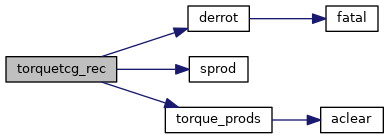
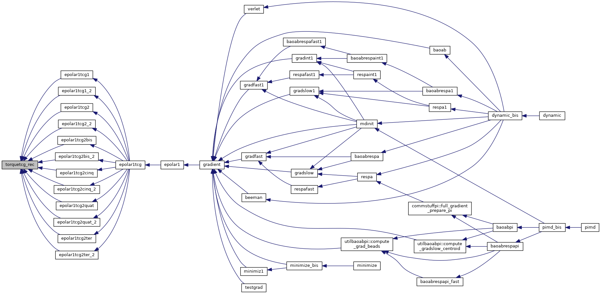
 1.8.5
1.8.5